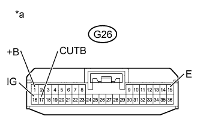

ENGINE IMMOBILISER SYSTEM > Security Indicator Light Does not Blink |
| 1.CHECK FOR DTC |
Check for DTCs (Click here).
|
| ||||
| OK | |
| 2.PERFORM ACTIVE TEST USING INTELLIGENT TESTER (SECURITY INDICATOR LIGHT) |
Check that the security indicator light illuminates when operating it with the Active Test (Click here).
| Tester Display | Test Part | Control Range | Diagnostic Note |
| Immobiliser Indicator | Security indicator light | ON/OFF | The test is possible when the following conditions are met:
|
|
| ||||
| OK | |
| 3.READ VALUE USING INTELLIGENT TESTER |
Turn the engine switch off.
Using the intelligent tester, read the Data List (Click here).
| Tester Display | Measurement Item/Range | Normal Condition | Diagnostic Note |
| Immobiliser | Engine immobiliser system status determined by certification ECU / Set or Unset | Set: Engine immobiliser set (engine start prohibited) (engine switch off) Unset: Engine immobiliser unset (engine start permitted) (engine switch on (ACC) or on (IG)) | When the engine immobiliser system does not change to the unset state, this item can be used to determine if the cause is the certification ECU or ID code box. |
|
| ||||
| OK | ||
| ||
| 4.CHECK HARNESS AND CONNECTOR (SECURITY INDICATOR LIGHT - CERTIFICATION ECU) |
w/ Navigation System:
Disconnect the H4 and H8 display connectors.
Disconnect the G26 ECU connector.
Measure the resistance according to the value(s) in the table below.
| Tester Connection | Condition | Specified Condition |
| H8-6 (SEUC) - G26-2 (IND) | Always | Below 1 Ω |
| H4-10 (GND1) - Body ground | Always | Below 1 Ω |
| H8-6 (SEUC) or G26-2 (IND) - Body ground | Always | 10 kΩ or higher |
w/o Navigation System:
Disconnect the H32 board connector.
Disconnect the G26 ECU connector.
Measure the resistance according to the value(s) in the table below.
| Tester Connection | Condition | Specified Condition |
| H32-2 (LP) - G26-2 (IND) | Always | Below 1 Ω |
| H32-11 (GND) - Body ground | Always | Below 1 Ω |
| H32-2 (LP) or G26-2 (IND) - Body ground | Always | 10 kΩ or higher |
|
| ||||
| OK | |
| 5.REPLACE SECURITY INDICATOR LIGHT |
Temporarily replace the security indicator light with a new or normally functioning one.
When the immobiliser is set (the engine switch is off), check that the security indicator light blinks.
|
| ||||
| OK | ||
| ||
| 6.CHECK HARNESS AND CONNECTOR (CERTIFICATION ECU - BATTERY AND BODY GROUND) |
|  |
Disconnect the G26 ECU connector.
Measure the voltage according to the value(s) in the table below.
| Tester Connection | Switch Condition | Specified Condition |
| G26-1 (+B) - Body ground | Always | 11 to 14 V |
| G26-16 (IG) - Body ground | Engine switch off | Below 1 V |
| G26-16 (IG) - Body ground | Engine switch on (IG) | 11 to 14 V |
| G26-17 (CUTB) - Body ground | Always | 11 to 14 V |
Measure the resistance according to the value(s) in the table below.
| Tester Connection | Condition | Specified Condition |
| G26-15 (E) - Body ground | Always | Below 1 Ω |
| *a | Front view of wire harness connector (to Certification ECU) |
|
| ||||
| OK | ||
| ||